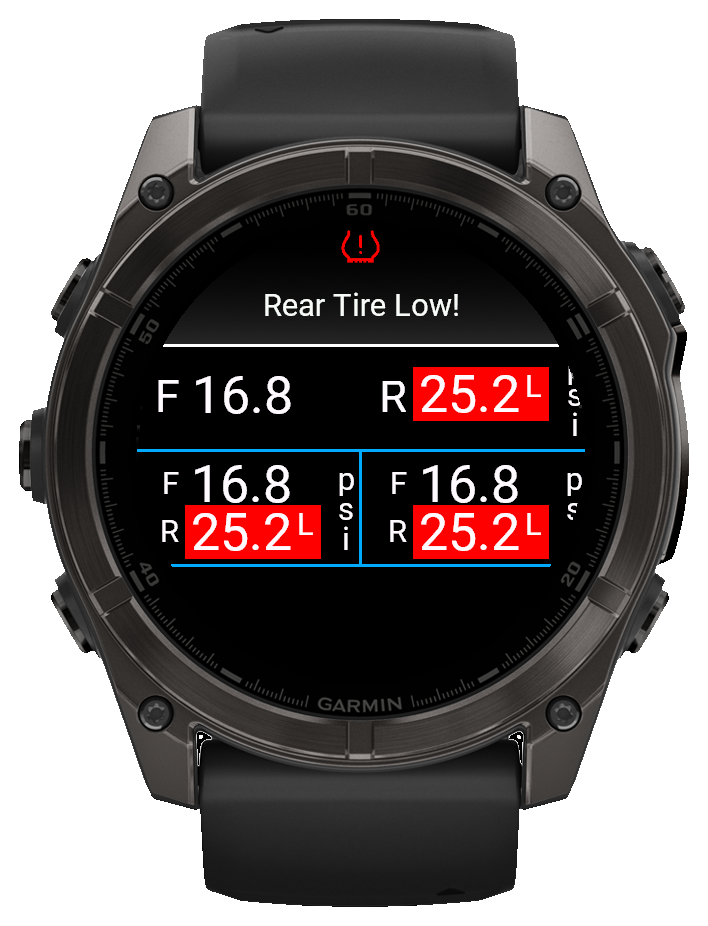

ALERT: SAVING SETTINGS WITH THE CONNECT IQ MOBILE APP IS AFFECTED BY A BUG IN THE GARMIN IQ SYSTEM. MAKE SURE THE TUBEWITCH DATA FIELD IS VISIBLE ON YOUR GARMIN DEVICE WHEN CHANGING SETTINGS. IF SETTINGS STILL DO NOT SAVE, TRY GARMIN EXPRESS. VIEW CURRENT WORKAROUND
SKS AIRSPY pressure and alerts on Garmin
Know your pressure before it costs you the ride
TubeWitch for SKS AIRSPY is a FREE Garmin data field for SKS AIRSPY ANT+ tire pressure sensors. It puts live tire pressures on Garmin Edge devices and Garmin watches, with clear warnings, fast reconnect behavior, and support for multiple bikes or wheelsets.
Real-time pressure warning on the ride screen
View Alert Demo

Garmin watch layout with popup and vibration alerts
View Alert Demo
Works with SKS AIRSPY ANT+ sensorsPopup, audible, and vibration alertsCustomizable layouts, colors, and labels
Ride confidence
Know when pressure really changed
Ever think a tire felt low after a hard hit, then stop to check but everything was fine? TubeWitch shows whether that brutal rock strike, thorns, or debris actually caused pressure loss, so you can avoid unnecessary stops and keep riding with confidence. If you really are losing air, TubeWitch will give you audible and popup alerts based on real pressure data, so you can bail before hitting that next big jump or descent.
TubeWitch can even keep watch in the background, so you can leave your map or favorite screen up and still get audible and popup alerts.
TubeWitch for Tubolito SYNCD is a separate app specifically for Tubolito’s Bluetooth tire pressure sensors, with the same flexible display, alert, and recording features as the original TubeWitch.
TubeWitch for SKS AIRSPY reads pressure broadcasts from SKS AIRSPY ANT+ sensors. Enter each numeric sensor ID and set Front / Rear positions and low/high pressure targets in TubeWitch settings. No Garmin sensor pairing is required.
It puts compatible tire pressure sensor data on Garmin screens with flexible display and alert options.
Fully reboot the Garmin device and restart the Connect IQ mobile app.
Add the TubeWitch data field to a data screen, leave the TubeWitch field visible, and rotate your wheels.
In the Connect IQ mobile app, open TubeWitch for SKS AIRSPY settings and enter the numeric part of each sensor ID, such as 21760, in its Front or Rear slot. Choose the units and set low/high pressure targets in each Sensor Set.


 leave the TubeWitch field visible
leave the TubeWitch field visible